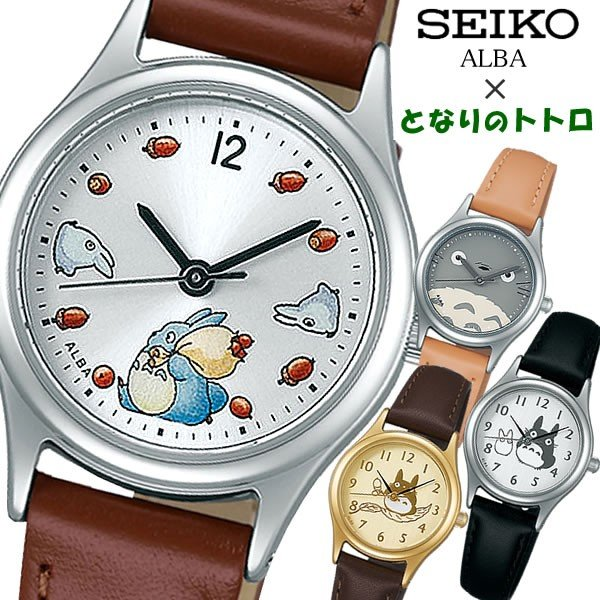
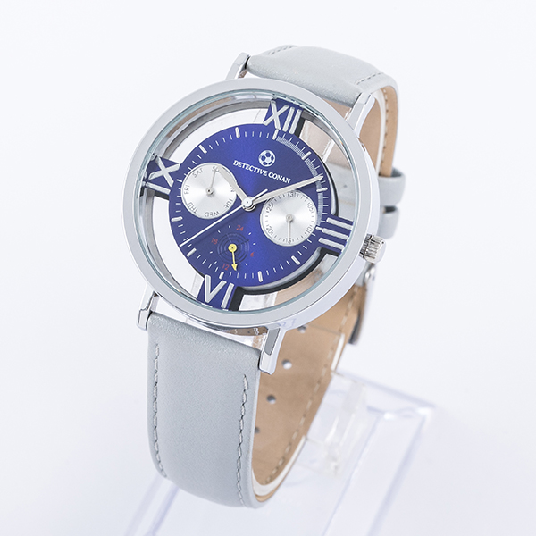
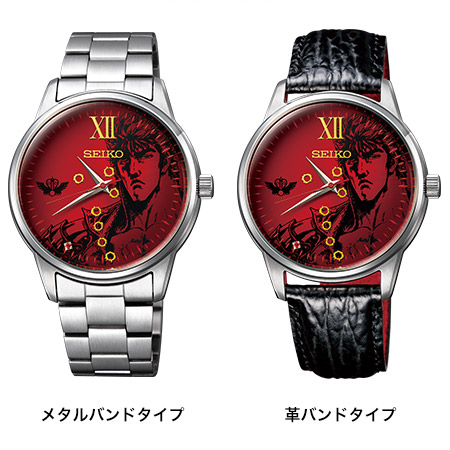
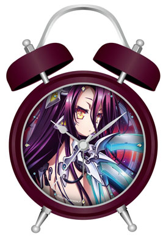

Q1.アニメは好き嫌いなしに平等に見れる
Q2.時計を買うなら腕時計に限った物でなくてもよい
Q3.３度のおやつよりアニメが好きだ
Q4.とあるシリーズだと初春ちゃんが一番の至宝
Q5.結局の所、時計とアニメのコラボレーションの
企画は理解したが、時計ならちゃんとした物が欲しい

SEIKO×大人気アニメ 『となりのトトロ』 のコラボ腕時計が登場！昭和30年代のとある田舎を舞台に、そこに引っ越してきた子供たちと、隣の森に昔から住んでいたオバケ達(トトロ)とのふれあいを描いた心温まる物語。親たちはしみじみと子供時代を思い出し、子供達はオバケのトトロ達に会いたくて夢中になる、見た人すべてを幸せにさせてくれる作品です。自分へのご褒美や、大切な人へのプレゼントにオススメです。

江戸川コナンが持つ「腕時計型麻酔銃」をイメージしたカラーリングの腕時計。クリアの盤面には「サッカーボール」のプリントや「犯人追跡メガネ」をイメージしたエッチングが施されています。コナンらしさに加え、カレンダー・曜日・24時間計のついたマルチファンクション仕様で機能性も抜群！これであなたも探偵ごっこができるゾ！

ーー”お前はもう死んでいる”。
どんな人間でも必ず死を迎える。それははるか先であるかも、すぐ明日であるかもしれない。限りある命を無為に過ごしてはいないか。
その人生に悔いなどあってはならない。
ーー”わが生涯に一片の悔いなし”ーー
という哲学的で、どこか掴めない所の魅力的なキャッチフレーズを提供するのは、知る人ぞ知る伝説の有名アニメ「北斗の拳」です。今回の時計は、時計メーカSEIKOと北斗の拳が３５周年記念として出したモデルです。
北斗ファンには堪らない一品となっています。

今回だけ腕時計という形式から外れましたが、もしあなたがこのアニメについて知り、好きなのであれば普通に欲しいと思える一品ではないでしょうか。腕時計ではなく置時計という利用方法になるので、周囲がきになってもずっと家に飾る使い方ができます。しかも「シュヴィ」という登場キャラに起こしてもらえる目覚まし時計ですので、これで快適な目覚めを手に入れることが出来るかもしれません。